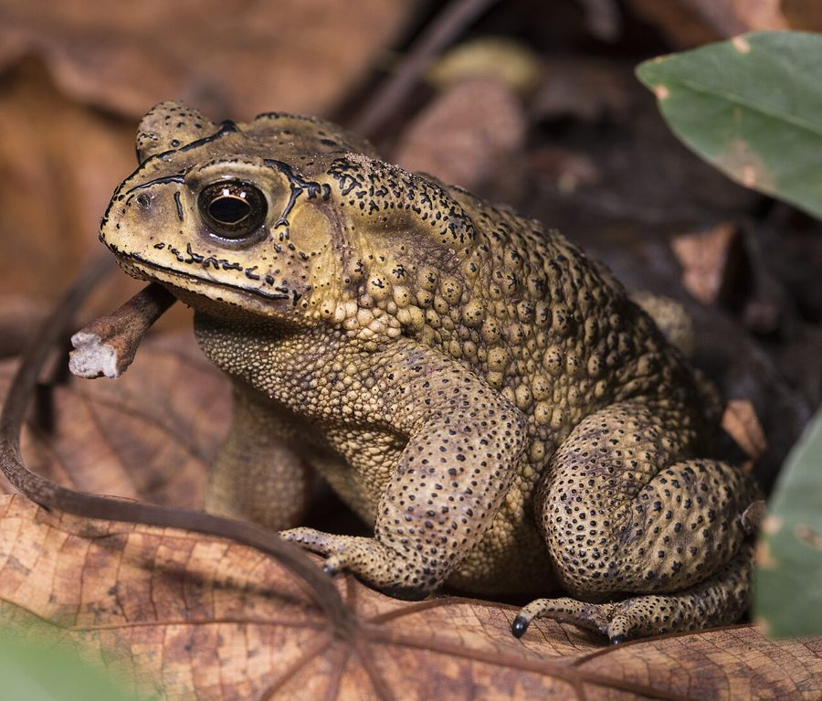

भेंडुकAsian Common Toad
Duttaphrynus melanostictus · Bufonidae · AMP-0001

- Scientific name
- Duttaphrynus melanostictus (Schneider, 1799)
- Family
- Bufonidae
- Hindi
- भेंडुक / गाँव का टोड
- Status here
- native
- IUCN
- LC
When to look कब देखें
Season not recorded.
भेंडुक / Asian Common Toad
Duttaphrynus melanostictus (Schneider, 1799) — Bufonidae
भेंडुक — वह मस्सों वाला, भूरा, धीरे-धीरे चलने वाला जीव जिसे लोग बिना देखे किनारे कर देते हैं — और जिसने कल रात आपके बगीचे में 600 कीड़े खाए। नज़रअंदाज़ किया जाता है क्योंकि सुंदर नहीं। ज़रूरी है क्योंकि हर जगह है।
हिंदी परिचय Hindi Overview
भेंडुक (Duttaphrynus melanostictus) पूर्वी उत्तर प्रदेश का सबसे आम उभयचर (Amphibian) है। यह मेंढक नहीं है — यह टोड है। अंतर यह है कि टोड की त्वचा मोटी और मस्सेदार होती है, और यह पानी से दूर सूखी जगहों पर भी रहता है।
गाँव के हर घर के आँगन में, बगीचे में, खेत की मेड़ पर, नाली के पास — भेंडुक रात में निकलता है और कीड़े खाता है। एक वयस्क भेंडुक एक रात में 500–1000 कीड़े खा सकता है।
मानसून में इसकी आवाज़ — एक निरंतर "क्रैं-क्रैं-क्रैं" — गाँव की रातों में सबसे प्रमुख ध्वनि बन जाती है। यह मानसून के आगमन का सबसे विश्वसनीय संकेत भी है।
Quick Identification त्वरित पहचान
| Feature | Description |
|---|---|
| Size | 5–15 cm snout-vent length — stocky, heavy-bodied; females much larger than males |
| Colour | Dry, warty brownish-grey skin with dark spots and blotches; underside pale cream |
| Parotoid glands | Two prominent, kidney-shaped raised glands behind the eyes — the key diagnostic feature |
| Head ridges | Distinct bony ridges on top of head between and behind the eyes |
| Eyes | Large, golden-yellow with horizontal pupils and black spectacle-like rims |
| Movement | Hops or walks slowly; does not leap rapidly like frogs |
Morphology आकृति विज्ञान
Biometrics:
| Measurement | Range |
|---|---|
| Snout-vent length (SVL) | 50–150 mm |
| Weight | 40–120 g |
Size: Males 5–9 cm; females 8–15 cm. Females significantly larger — carry more eggs. Weight up to 80 g in large females.
Skin: Warty, granular — covered with small rounded tubercles (warts). Skin is dry to the touch compared to frogs, which feel moist. This drier skin allows toads to be further from water than frogs.
Parotoid glands: The two large raised glands behind the eyes are the toad's primary defence. They secrete bufotoxin — a mixture of cardiotoxic steroids (bufadienolides), alkaloids, and other compounds. The toxin is not injected; it is passively secreted onto the skin. Predators that mouth a toad get a dose in their mouth. Dogs that pick up a toad drool profusely and may vomit — the toxin is highly unpleasant. Humans: wash hands after handling; do not rub eyes.
Eyes: Large, golden-yellow with horizontal pupil. Excellent night vision.
Tympanum (ear): Visible as a flat oval behind the eye, smaller than the eye.
Limbs: Four legs; rear legs moderately long. Toes of hind feet partially webbed — useful for swimming during breeding.
Sexual dimorphism: Males have a dark throat (vocal sac area); females pale. Males develop rough nuptial pads on the inner toes during breeding season, used to grip the female during amplexus.
हिंदी: मादा नर से बहुत बड़ी होती है। पीछे की आँखों के दोनों तरफ के बड़े उभार (parotoid glands) में ज़हर होता है — लेकिन यह काटता नहीं, छूने से त्वचा पर आता है। कुत्तों को यह बेहद बुरा लगता है।
The Toxin — What It Does and Does Not Do ज़हर — क्या करता है, क्या नहीं
What it does: The bufotoxin is a real defence against predators. Any animal that bites or mouths a toad gets the toxin on mucous membranes. Effects include: profuse salivation, head-shaking, vomiting, and in severe cases (dogs eating whole toads) cardiac effects. Snakes with specialised toxin-resistance (Xenochrophis species) can eat toads safely.
What it does NOT do:
- It does not cause warts on human skin (warts are caused by human papillomavirus — no connection to toads)
- It does not spray or jump at people
- It is not dangerous to humans who handle the toad and then wash their hands
The wart myth (टोड को छूने से मस्से होते हैं) is one of the most persistent wildlife myths in rural India. It has no basis. The toad's warts are simply thickened skin glands — they produce no substance that causes warts in humans.
हिंदी — मिथक तोड़ें:
"भेंडुक को छूने से मस्से होते हैं" — यह बिल्कुल गलत है।
मानव त्वचा पर मस्से एक वायरस (Human Papillomavirus) से होते हैं — टोड से नहीं।
भेंडुक को हाथ से उठाएँ, बाद में हाथ धो लें — कोई खतरा नहीं।
इस मिथक को सुधारना नागरिक विज्ञान का एक महत्वपूर्ण कार्य है।
Ecological Role पारिस्थितिक भूमिका
Nocturnal insectivore: D. melanostictus is primarily active at night, feeding on anything that moves and fits in its mouth:
- Beetles (largest single prey category by weight)
- Ants and termites (by number)
- Caterpillars and moth larvae
- Cockroaches
- Mosquitoes and other flies
- Earthworms
- Occasionally small lizards or juvenile frogs
A single adult toad can consume 500–1000 invertebrates per night during the active season. Over an entire monsoon season (5–6 months of activity), a single toad may eat 20,000–40,000 insects. In a village with 100 active toads, this represents millions of insects removed per season — free biological pest control.
Prey for other species:
- Keelback snakes (Xenochrophis) — toad specialist
- Rat snake (Ptyas mucosa) — occasional
- Large herons — Grey Heron swallows toads whole
- Common mongoose
- Large monitor lizards
Monsoon indicator: The onset of the toad breeding chorus — heard as early as the evening before the first monsoon rain arrives — is one of the most reliable natural monsoon predictors. Toads detect changes in atmospheric pressure, humidity, and temperature that precede rain.
हिंदी: एक भेंडुक एक रात में 500–1000 कीड़े खाता है। मानसून के 5–6 महीनों में यह 20,000–40,000 कीड़े खाता है।
100 भेंडुक वाले गाँव में — लाखों कीड़े प्रति मौसम।
यह मुफ़्त कीट नियंत्रण है।
Life Cycle / Phenology जीवन चक्र
Activity cycle:
| Period | State | हिंदी |
|---|---|---|
| Dec–Feb | Dormant under debris, soil, or burrows | शीत निद्रा — मिट्टी/कूड़े के नीचे |
| Mar–Apr | Emerging; feeding to rebuild condition | जाग रहा है; खाना शुरू |
| May–Jun | Active; waiting for monsoon | सक्रिय |
| Jun–Jul | Breeding — first rains trigger chorus | प्रजनन — पहली बारिश |
| Jul–Oct | Most active; feeding intensively | सबसे सक्रिय |
| Nov | Winding down; seeking shelter | धीमा; आश्रय खोज रहा है |
Breeding:
- Triggered by first significant monsoon rain
- Males congregate at any water body — ponds, puddles, flooded fields, roadside pools — and call intensively through the night
- Call: loud, repetitive "kr-r-r-r" or "kwak-kwak-kwak" — a continuous chorus audible hundreds of metres away
- Amplexus: male grips female from behind (axillary amplexus); may remain in amplexus for hours
- Eggs: Laid in long, double strings of jelly — up to 35,000 eggs per female — in shallow water
- Tadpoles: Hatch in 2–3 days; small, black; tadpoles are gregarious (form schools); metamorphose in 4–6 weeks
- Toadlets: Tiny (5–10 mm) on emergence; leave water immediately; highly vulnerable to desiccation and predation
हिंदी: पहली बारिश में तालाब के पास एकत्र होते हैं और रात भर ज़ोर से बोलते हैं।
मादा 35,000 तक अंडे दे सकती है — जेली की लड़ी में।
टैडपोल 4–6 हफ्तों में छोटे टोड बन जाते हैं।
Expected Locally स्थानीय रूप से अपेक्षित
Not a field record. Written from published accounts for eastern Uttar Pradesh. No confirmed local sighting yet — if you have seen it, that is what the atlas needs.
अभी तक स्थानीय पुष्टि नहीं। यह विवरण प्रकाशित स्रोतों से है, किसी अवलोकन से नहीं।
Extremely common year-round across all villages and towns in Basti district. Individual toads are routinely encountered at night on garden paths, village compounds, and near outdoor light sources where they feed on attracted insects. During the day, they remain hidden under flower pots, piles of bricks, or leaf litter. The breeding chorus begins immediately with the first heavy monsoon showers in June.
Distribution वितरण
Global range: Widespread across South and Southeast Asia, from Pakistan and India through Nepal, Bangladesh, Myanmar, southern China, and Indochina to Java and the Sunda Islands; widely introduced in eastern Indonesia and Papua New Guinea.
In India: Widespread throughout the plains, hills, and peninsular regions of India, extending from the Himalayas up to elevations of about 1,800 m.
In Uttar Pradesh: Common resident throughout all districts of Uttar Pradesh, heavily associated with agricultural areas, forest margins, and human settlements.
In Basti district / eastern UP: Abundant year-round resident throughout Basti district; highly active around village ponds, kitchen gardens, agricultural fields, and sewage drains.
Range notes: No significant range changes documented.
Research Questions शोध प्रश्न
Anyone can investigate these | कोई भी इन प्रश्नों की जाँच कर सकता है
- On which night does the first chorus begin? / पहली बारिश के बाद पहली आवाज़ कब आती है? — Note the date and time of first calling, and whether it was before or after rain began. Multi-year data is a monsoon phenology record.
- How many toads are active in your compound on a monsoon night? / मानसून की रात आपके आँगन में कितने भेंडुक हैं? — Walk the perimeter with a torch and count all seen.
- Which water bodies do they breed in? / कौन से तालाब में प्रजनन करते हैं? — Note water body type (permanent pond, seasonal pool, flooded road, rice field), depth, vegetation.
- Do villagers know the wart myth is false? / क्या गाँव वाले जानते हैं कि मस्से वाली बात गलत है? — Survey 10 people. Baseline for conservation communication.
- Are toad numbers declining? / क्या संख्या कम हो रही है? — Ask elders to compare current numbers with 20–30 years ago. Oral history is valid data.
Similar Species मिलती-जुलती प्रजातियाँ
| Species | How to tell apart | हिंदी |
|---|---|---|
| Hoplobatrachus tigerinus (Indian Bull Frog) | Smooth skin (not warty); bright yellow and green in breeding male; large leaper | चिकनी त्वचा; प्रजनन में पीला-हरा |
| Euphlyctis cyanophlyctis (Skipping Frog) | Smooth skin; smaller; extremely fast; skips on water surface | चिकना; छोटा; पानी पर कूदता है |
| Fejervarya spp. (Cricket Frogs) | Much smaller (2–4 cm); smooth skin; pointed snout; rapid jumping | बहुत छोटे; चिकने; तेज़ कूद |
Field rule: Large, warty, slow-moving, brown — with two prominent raised ridges behind the eyes — on your garden path at night = Duttaphrynus melanostictus. Frogs are smooth-skinned and leap rapidly. Toads are warty and walk.
Taxonomy & Classification वर्गीकरण
Original description. Duttaphrynus melanostictus was originally described as Bufo melanostictus by Johann Gottlob Schneider in 1799 in his work Historiae Amphibiorum naturalis et literariae, Fasciculus primus (p. 216). Type locality: "East Indies" (Ostindien). The genus name Duttaphrynus was established in 2006 to honor the prominent Indian herpetologist Sushil Kumar Dutta, combined with the Greek word phrynos meaning toad. The species epithet melanostictus is derived from the Greek melas (black) and stiktos (spotted), referencing the black-tipped warts.
Subspecies. Monotypic — no subspecies are currently recognised.
Family and order placement. This species belongs to the order Anura and family Bufonidae (true toads). Bufonidae is a large, cosmopolitan family containing over 600 species in ~50 genera. The genus Duttaphrynus comprises approximately 30 species distributed across South and Southeast Asia, representing the dominant toad clade of the Oriental region.
Phylogenetic notes. Molecular studies (such as those by Frost et al., 2006, and subsequent mitochondrial/nuclear DNA phylogenies) split the massive, polyphyletic genus Bufo, placing South Asian warty toads in the resurrected or new genus Duttaphrynus. It is closely related to Duttaphrynus stomaticus (Asian Marble Toad).
IUCN status rationale. Assessed as Least Concern (LC). The species has an extremely large global distribution, is highly adaptable to human-dominated landscapes, and has a stable population with no range-wide threat drivers.
Photo Gallery फोटो गैलरी
फोटो निर्देश: मानसून में रात को टॉर्च लेकर बाहर जाएँ। भेंडुक नाली के पास, बगीचे में, घर की दीवार के किनारे मिलेगा।
Photos needed आवश्यक फोटो
- [ ] Adult showing parotoid glands clearly (वयस्क — parotoid glands दिखते हों)
- [ ] Close-up of eye and tympanum (आँख और कान — क्लोज़-अप)
- [ ] Breeding pair in amplexus (जोड़ा — प्रजनन)
- [ ] Egg strings in water (अंडे — जेली की लड़ी)
- [ ] Tadpoles in pond (टैडपोल)
- [ ] Toadlet on emergence (नन्हा टोड — पानी छोड़ते समय)
Atlas Connections संबंधित प्रजातियाँ
- Oriental Garden Lizard — shares village insectivore niche; both eat similar prey though active at different times (REP-0001)
- Red Cotton Bug — listed toad prey near pond margins (INS-0001)
- Indian Pond Heron — major predator of toad tadpoles in monsoon pools (BRD-0004)
- Indian Lotus — lotus ponds provide breeding habitat for toads (FLR-0005)
- Mound-building Termite — feeds on termite alates during monsoon nuptial flights (SFL-0001)
References संदर्भ
- Schneider, J.G. (1799). Historiae Amphibiorum naturalis et literariae. Fasciculus primus. Jena, p. 216. [original description]
- Dutta, S.K. & Manamendra-Arachchi, K. (1996). The Amphibian Fauna of Sri Lanka. Wildlife Heritage Trust, Colombo.
- Frost, D.R. (2024). Amphibian Species of the World: an Online Reference. Version 6.2. American Museum of Natural History, New York.
- Daniel, J.C. (2002). The Book of Indian Reptiles and Amphibians. Bombay Natural History Society / Oxford University Press, Mumbai.
- Zoological Survey of India (2012). Fauna of Uttar Pradesh: State Fauna Series. Vol. 19. ZSI, Kolkata.
- IUCN Red List of Threatened Species — Duttaphrynus melanostictus.
- GBIF Occurrence Data — Duttaphrynus melanostictus, Uttar Pradesh (2010–2025).
Source file: species/fauna/amphibians/common_toad.md